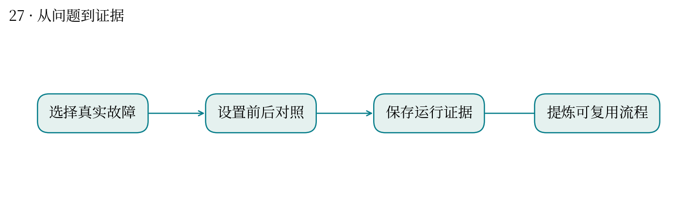
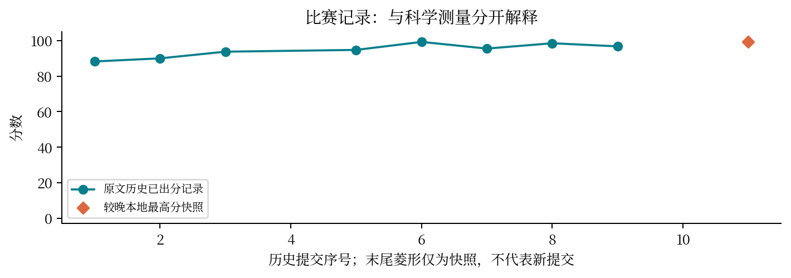

现实中想解决什么：长时间科研计算中，怎样减少失败重跑和已有结果丢失？
从计算到应用：分批执行与落盘 → 可恢复、可复核的产物 → 降低工作中断后的恢复成本。
这次实际做到哪一步：本题用三个分子演示并整理指南，直接对应科研工作流程的可靠性。
还缺什么：案例不能证明所有任务都提速；需在实际项目测量恢复成功率、额外开销和适用边界。
怎样把一次有效的 AI 协作，变成别人能够复用的方法？
最高分快照：99.25 · 2026-10-12T01:11:24+08:00
最佳实践报告需要真实任务、前后对照、可复现过程和局限。核心案例是大环构象任务中的批处理超时与小批保存。
以三个分子作演示，比较整批运行与分批落盘，补齐局部优化、能量和导出复核，形成可重放指南。
历史得分由 88.25、90、94.75 提升到 99.25。报告价值在于减少已算结果的丢失，而非证明所有构象任务都更快。
案例太少会限制外推；省下丢失的计算与提高搜索质量是两个不同改进。
与你把科研流程整理为 WDL、把教学设计落成 SciFusion 产品的经验直接对应：把隐性操作变成可检查步骤。
三分子演示足以说明故障模式，但不足以估计所有分子上的平均加速比；需要更大样本与统一预算。


| attempt | 提交时间 | 分数 | 状态 |
|---|---|---|---|
| 51048 | 10-10 21:03:21 | 88.25 | 已出分 |
| 51271 | 10-10 21:52:50 | 90.0 | 已出分 |
| 51543 | 10-10 22:51:32 | 93.75 | 已出分 |
| 51660 | 10-10 23:20:30 | — | 失败 |
| 51767 | 10-10 23:43:32 | 94.75 | 已出分 |
| 51948 | 10-11 00:25:19 | 99.25 | 已出分 |
| 52442 | 10-11 02:26:14 | 95.5 | 已出分 |
| 52760 | 10-11 04:10:59 | 98.5 | 已出分 |
| 54614 | 10-11 16:10:18 | 96.75 | 已出分 |
| 55391 | 10-11 19:01:34 | — | 排队中 |
源文件 SHA256 见 证据清单；用 scripts/build.py 重建图表。